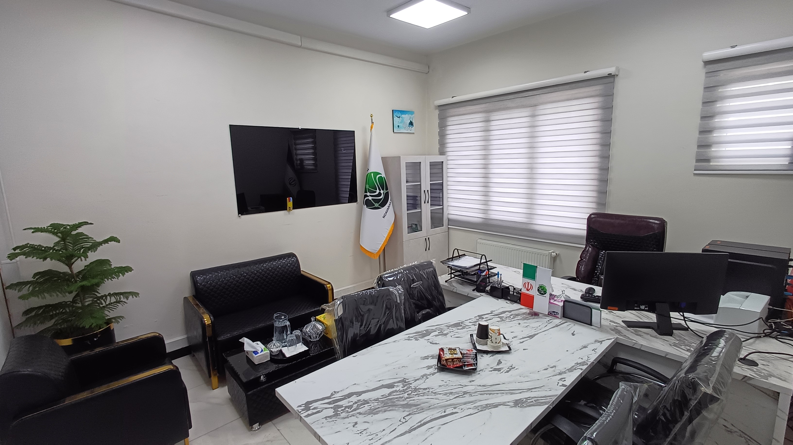

نمای کلی شرکت

درباره شرکت
شرکت نوآوران موج با بیش از یک دهه تجربه در تعمیرات تخصصی لوازم الکترونیکی، لپتاپ و کامپیوتر، خدمات سریع، دقیق و مقرونبهصرفه ارائه میدهد.
خدمات ما
تعمیرات لپتاپ
تعمیرات کامپیوتر
خدمات تعمیرات کامپیوتر شامل تعمیرات سختافزاری، ارتقاء سیستم و رفع مشکلات نرمافزاری است. ما به تمامی نیازهای شما در این زمینه پاسخ خواهیم داد.
تعمیرات دوربین عکاسی
تعمیرات تخصصی دوربینهای عکاسی با استفاده از تجهیزات پیشرفته و تیم فنی مجرب. از تعمیر لنز تا رفع مشکلات سختافزاری، تیم ما آماده است تا مشکلات دوربین شما را حل کند
تعمیرات دوربین فیلمبرداری
خدمات تعمیر دوربینهای فیلمبرداری حرفهای و غیرحرفهای با دقت بالا. مشکلات مربوط به ضبط، لنز، پردازش تصویر و موارد دیگر به بهترین نحو رفع میشود.
تعمیرات تجهیزات شبکه
ما مشکلات شبکه شما را به طور تخصصی و سریع رفع میکنیم. از تعمیرات سوییچها و روترها تا بهینهسازی شبکه، خدمات گستردهای را ارائه میدهیم.
تعمیرات موبایل
اگر گوشی شما دچار مشکل شده است، ما میتوانیم آن را سریع و با کیفیت تعمیر کنیم. از تعمیر صفحه نمایش تا رفع مشکلات نرمافزاری، تیم ما آماده است.
تعمیرات تجهیزات رادیویی
ما تخصص در تعمیر و نگهداری تجهیزات رادیویی از جمله فرستندهها، گیرندهها و دیگر دستگاههای رادیویی داریم. تیم فنی ما با استفاده از فناوریهای پیشرفته به رفع مشکلات و بهینهسازی عملکرد این تجهیزات میپردازد
تعمیرات لوازم الکترونیکی
مامی مشکلات لوازم الکترونیکی شما اعم از تلویزیون، مایکروویو، یخچال، و لوازم خانگی دیگر با بهترین کیفیت تعمیر میشوند. ما به تعمیر تمامی برندها و مدلهای مختلف با استفاده از قطعات اورجینال میپردازیم
تعمیرات ماشینآلات اداری
ما به تعمیرات تخصصی ماشینآلات اداری از جمله پرینترها، فکسها، و کپیها میپردازیم. تیم فنی ما با بررسی دقیق و شناسایی سریع مشکلات، ماشینآلات شما را به بهترین نحو تعمیر و به حالت کارکرد اولیه برمیگرداند
چرا ما؟
در نوآوران موج کیفیت، دقت و پشتیبانی اولویت ماست. با تکنولوژی روز، بهینهترین راهحلها را برای مشکلات فنی ارائه میدهیم.